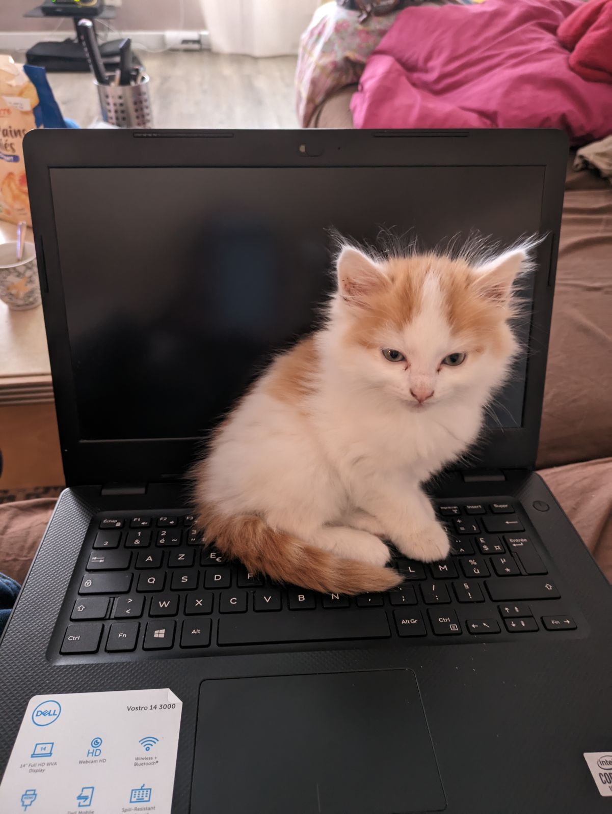
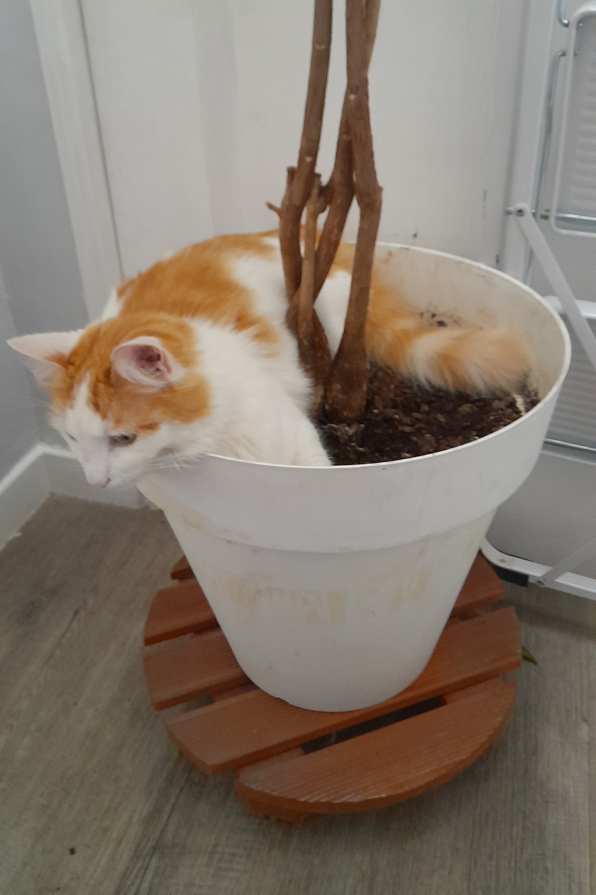
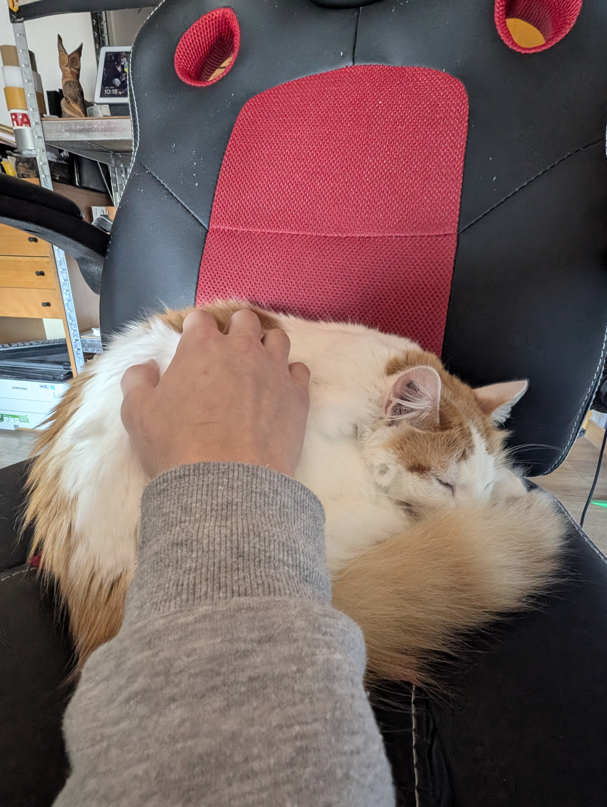
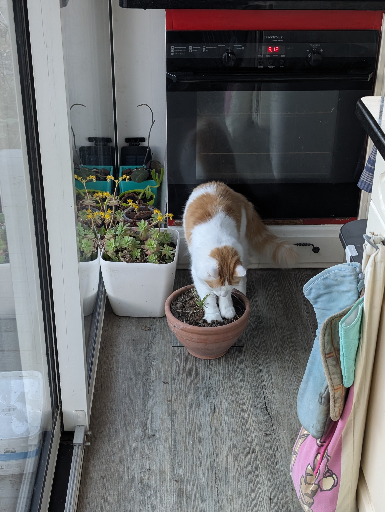

Il fallair bien remplir ce site... A part ça, elle s'appelle Ubuntu, oui, exactement comme la distribution Linux. Le saviez vous, Ubuntu signifie "La somme de toute nos conaissances" en Afrikaans. Nous l'avons nommé comme ça car c'était l'année des U et car toute ma famille travaille dans le secteur de l'informatique.
L'ordinateur est vraiment sur Ubuntu ! Mais elle était jeune encore, on venait de l'avoir et elle commençait à peine a s'approcher de nous. Je me souviens que le jour ou on l'a eu, elle est resté planqué derrière le frigo a miauler. En rentrant je me suis demandé pourquoi le frigo miaulait.

Elle y a passé sa meilleur sieste... Je l'ai retrouvé comme ça en sortant de ma chambre. Puis j'ai envoyé la photo à ma mère, aujourd'hui elle l'utilise comme fond d'écran.

Elle adore aller sur la chaise de mon père. Comme en plus il a un bureau assis/debout il se lève et il la laisse dormir là. Oui, maintenant la maison tout entière appartient a ce chat

Décidément ce chat... Bon en vérité il y avait une bête dedans et notre chat a une âme de chasseuse... Heuresement ma mère a rappliqué avant qu'elle ne osrte plus de terre du pot que ce qu'il y avait déjà par terre.
